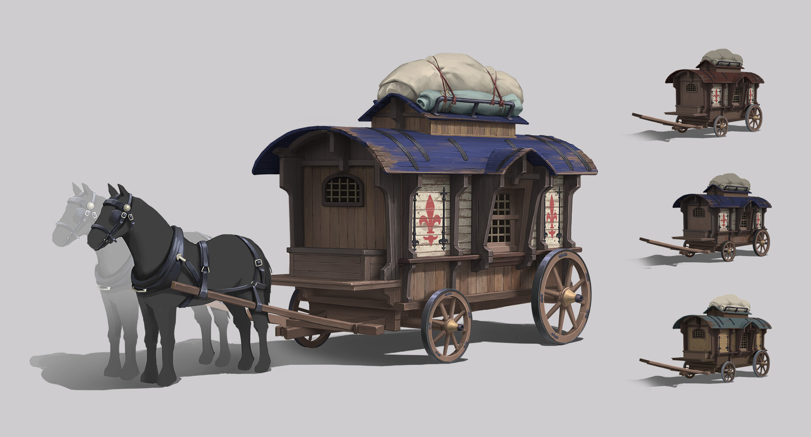

Images of the medevial transportation

Medevial transporation was a very arduous process. In medieval times, average land transportation speeds by foot were around 20-30 miles (32-48 km) per day, while by horse, speeds ranged from 30-40 miles (48-64 km) per day.